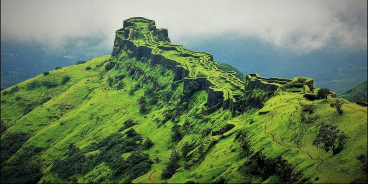

Location: Pune district of Maharashtra, India
Elevation: 1,376 m
Mountain range: Western Ghats
Best Time to Visit: Monsoon ( also Pre and Post monsoon ), Winter
Difficulty Level: Moderate
Rajgad fort is located in the Pune district of Maharashtra at an elevation of about 4600 ft, and hence over a period of time, it has become an idyllic stoppage for several trekkers, campers and history lovers. Even though the fort is believed to have been built several centuries ago in the early Medieval Period of India, it is mostly recognised for its relation with the Maratha Empire.
As per records, this fort remained the capital of the Maratha Empire for more than 2 decades and it is the place where Chhatrapati Shivaji Maharaj stayed for the maximum number of days in the country. It is also the birthplace of Shivaji's son. In the early 19th century, the fort was captured by the British army.
Therefore, it is of great historical and archaeological importance. However, on account of it being a hill fort blessed with lush green beauty, it is immensely popular amongst nature lovers. Today, the fort is visited by thousands of locals and offbeat travellers.
The way to Rajgad is via NASRAPUR Phata which is approximately 15 - 20 Kms from Katraj Tunnel and just 5kms from the Mcdonalds/Dominos outlet after the first toll on NH4. Reach NASRAPUR by NH 4, this is approx 35 kms from Pune Station. From Nasrapur travel westwards to reach the following base villages…..there are multiple base villages for this fort. I have mentioned 3 routes here [Gunjawane, Bhor and Pali]
1. From Gunjawane:
the trek is a little bit tough as it leads to the Chor Darwaja and it takes almost 2 1/2 hours for trekking with 4-5 breaks during the trek. Inexperienced trekkers should go via Pali village as this trek is not that difficult as compared to the trek via Gunjawane.
2. The Pali route:
will take you to the main door of the fort. Trek from Pali village is comparitively easy. So if you have elderly people or kids in your group, we recommend that you take this route. There's a way which goes to Torna along the ridges of Sahyadri Mountains from Rajgad.
3.For the Bhor Route:
e, you will have to head towards bhor from NH4 and then from Bhor to Bhutonde. From Bhutonde village, a 3 -4 hours trek will take you to the Alu Darwaja of Rajgad. This route is not very popular, but if you want to experience something different, then, you should definitely try this.
Difficulty Level and Other useful tips:
Difficulty level is moderate. It takes approximately 2 1/2 hours to reach to the top via Pali and 3 1/2 hours via Gunjawane. The highest point of Rajgad is Balekilla which is a fort on Rajgad. Take plenty of water and some energy drinks with you as the trek is a bit tiring.
Food and Water on the fort: It is always recommended that you carry your own drinking water from home. Atleast 3 litres per person for one day treks
For food, the villagers on weekends do serve Poha, BHaji and Zhunka Bhakari at Padmavati temple on the fort. But again, do take some snacks packed from home.
Camping Info: Rajgad fort is an ideal fort for camping. There is plenty to be explored on the fort which cannot be done in a one day trek, hence halting overnight and then exploring the fort the next morning is always recommended.
There are 2 temples [Padmavati and a smaller temple] which you can use for camping during night if you do not have tents.
Security is not a major concern as both the temples have working doors. But, if you have females in your group, I would recommend that you take at-least 7-10 males in your group.
You can also carry your own tents for camping. There are plenty of nice spots where you can pitch your tents for the night.
Accomodation Capacity:
Padmavati Temple : 50
Smaller temple: 6-7
Things to Carry:
Please refer below blog where we have listed all the necessary things to carry while going for a sahyadri mountain range trek.
More Images:
{kind=link}
{kind=link}
{kind=link}